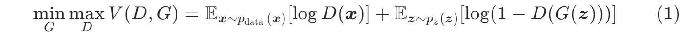
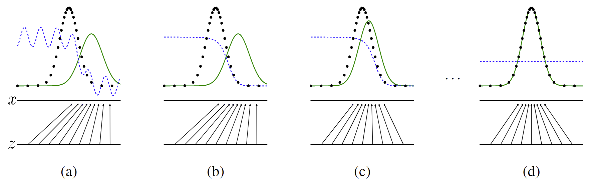
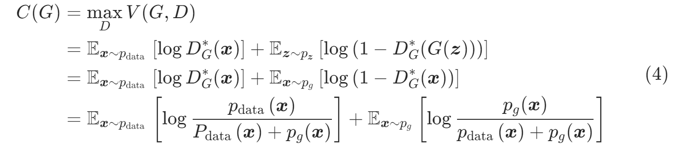
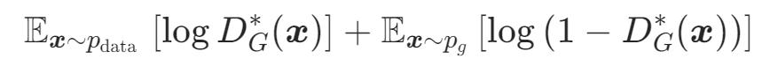
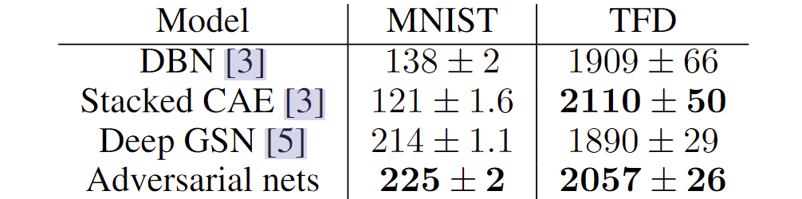
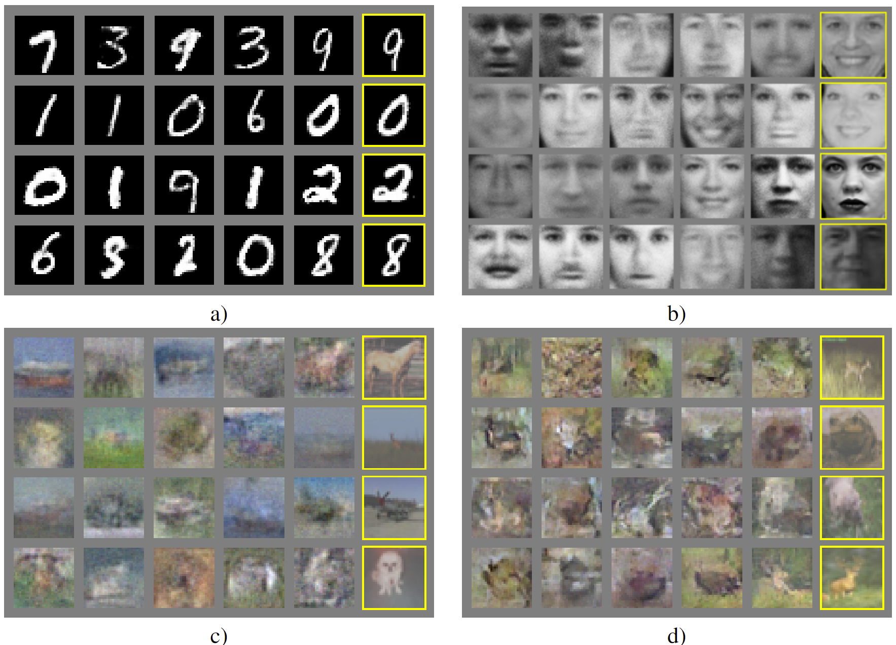
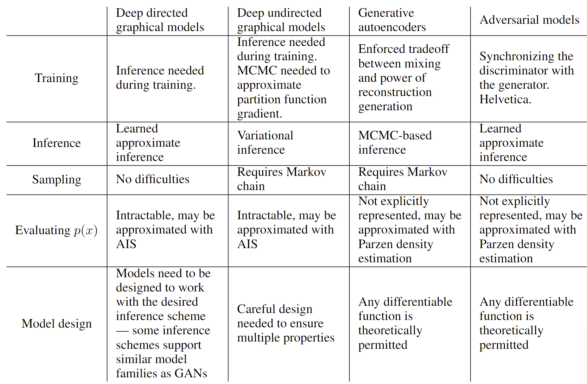

论文精读4：GAN
1 Abstract
我们提出了一种通过对抗过程估计生成模型的新框架，在该框架中，我们同时训练两个模型：一个生成模型，它捕捉数据分布；以及一个判别模型，它估计样本来自训练数据而非的概率。的训练过程是最大化犯错误的概率。此框架对应于一个极小极大两人博弈。在任意函数和的空间中，存在一个唯一解，即复现训练数据分布，而在各处等于。若模型和由MLP定义，整个系统可通过反向传播进行训练。在训练或样本生成过程中，无需任何马尔可夫链或展开的近似推断网络。实验通过定性和定量评估生成的样本来展示该框架的潜力。
2 Introduction
深度学习的潜力在于发现丰富的、层次化的模型[2]，这些模型能够表示人工智能应用中遇到的各种数据的概率分布，例如自然图像、包含语音的音频波形以及自然语言语料库中的符号。迄今为止，深度学习中最显著的成功涉及判别模型，通常是将高维、丰富的感官输入映射到类标记[14, 20]。这些显著的成功主要基于反向传播和暂退法算法，使用分段线性单元[17, 8, 9]，这些单元具有特别良好的梯度特性。深度生成式模型的影响较小，这是由于在极大似然估计及相关策略中，近似许多难以处理的概率计算存在困难，以及在生成式情境中利用分段线性单元优势的困难。我们提出了一种新的生成式模型估计程序，以规避这些难题。
在提出的对抗网络框架中，生成式模型与对手——一个判别式模型相对立，该判别式模型学习判断一个样本是来自模型分布还是数据分布。生成式模型可以被视为类似于一群伪造者，试图制造假币并在不被发现的情况下使用，而判别式模型则类似于警察，试图检测这些假币。这种游戏中的竞争促使双方改进其方法，直到伪造品与真品无法区分。
该框架可以为多种模型和优化算法生成特定的训练算法。在本文中，我们探讨了生成模型通过多层感知器传递随机噪声来生成样本的特殊情况，判别模型也是一个多层感知器。我们将此特殊情况称为对抗性网络。在这种情况下，我们可以只非常成功的反向传播和 dropout 算法 [16] 来训练这两个模型，并使用仅使用前向传播从生成模型中采样。不需要近似推理或马尔可夫链。
3 Related work
直到最近，大多数关于深度生成模型的工作都集中在构造概率分布函数参数规范的模型上，然后可以通过最大化对数似然来训练模型。在这一系列模型中，也许最成功的是深度玻尔兹曼机[25]。这些模型通常具有难以处理的似然函数，因此需要对似然梯度进行多次近似。这些困难推动了“生成机器”模型的开发，这些模型没有明确表示可能性，但能够从所需的分布生成样本。生成随机网络[4]是产生式机器的一个例子，可以用精确的反向传播来训练，而不是Boltzmann机器所需的大量近似。这项工作通过消除生成随机网络中使用的马尔可夫链来扩展生成机器的想法。
我们的工作通过使用观察到通过生成过程反向传播导数：
当我们开发这项工作时，我们不知道Kingma和Welling[18]和Rezendeet等人[23]开发了更一般的随机反向传播规则，允许人们通过方差有限的高斯分布反向传播，并反向传播到协方差参数和平均值。这些反向传播规则可以让人们学习生成器的条件方差，我们在这项工作中将其视为超参数。Kingma和Welling[18]和Rezende等人[23]使用随机反向传播来训练变分自编码器（VAEs）。与生成对抗网络一样，变分自动编码器将可微生成器网络与第二个神经网络配对。与生成对抗网络不同，VAE 中的第二个网络是一个执行近似推理的识别模型。GAN 需要通过可见单元进行微分，因此无法对离散数据进行建模，而 VAE 需要通过隐藏单元进行微分，因此无法具有离散的潜在变量。存在其他类似 VAE 的方法[12, 22]，但与我们的方法不太密切相关。
以前的工作也采用了使用判别准则来训练生成模型的方法[29,13]。这些方法使用深度生成模型难以处理的标准。这些方法甚至很难近似深度模型，因为它们涉及概率的比率，而这些比率不能用下限概率的变分近似来近似。噪声对比估计（NCE）[13] 涉及通过学习使模型对区分数据和固定噪声分布有用的权重来训练生成模型。使用先前训练的模型作为噪声分布允许训练一系列质量不断提高的模型。这可以看作是一种非正式的竞争机制，在精神上类似于对抗网络游戏中使用的正式竞争。NCE的关键限制是它的“鉴别器”是由噪声分布概率密度与模型分布的比值定义的，因此需要能够通过两个密度评估和反向传播的能力。
以前的一些工作使用了拥有两个神经网络竞争的一般概念。最相关的工作是可预测性最小化[26]。在可预测性最小化中，神经网络中的每个隐藏单元都经过训练以与第二个网络的输出不同，后者在给定所有其他隐藏单元的值的情况下预测该隐藏单元的值。这项工作与可预测性最小化在三个重要方面有所不同：
- 在这项工作中，网络之间的竞争是唯一的训练标准，并且足以训练网络。可预测性最小化只是一个正则化器，它鼓励神经网络的隐藏单元在完成其他任务时在统计上是独立的；这不是一个主要的训练标准。
- 比赛的性质不同。在可预测性最小化中，比较了两个网络的输出，其中一个网络试图使输出相似，另一个试图使输出不同。问题的输出是单个标量。在 GAN 中，一个网络产生一个丰富的高维向量，用作另一个网络的输入，并尝试选择另一个网络不知道如何处理的输入。
- 学习过程的规范不同。可预测性最小化被描述为一个目标函数最小化的优化问题，学习方法接近目标函数的最小值。GAN 基于极小极大游戏而不是优化问题，并且具有一个模型寻求最大化的价值函数，另一个模型寻求最小化。该游戏在一个鞍点终止，鞍点相对于一个玩家的策略是最小的，相对于另一个玩家的策略是最大的。
生成对抗网络有时与“对抗性示例”[28]的相关概念混淆。对抗性示例是通过在分类网络的输入上使用基于梯度的优化来找到的示例，以便找到与尚未错误分类的数据相似的示例。这与目前的工作不同，因为对抗性示例不是训练生成模型的机制。相反，对抗性示例主要是分析工具，表明神经网络以有趣的方式表现，通常自信地以高置信度对两幅图像进行分类，即使它们之间的差异是人类观察者无法察觉的。这种对抗性示例的存在确实表明生成对抗网络训练可能是低效的，因为它们表明可以使现代判别网络自信地识别一个类，而不模拟该类的任何人类可感知属性。
4 Adversarial nets
当模型都是MLP时，对抗性建模框架最容易应用。为了学习生成器在数据上的分布，我们定义了输入噪声变量的先验，然后将映射到数据空间的映射表示为，其中是一个可微函数，由参数为的多层感知器表示。我们还定义了一个输出单个标量的第二个多层感知器。$D(x) x p_gDG G log(1 − D(G(z)))D G V (G, D) $的两人极小极大游戏：

在下一节中，我们对对抗网络进行了理论分析，本质上表明训练标准允许人们恢复数据生成分布，因为$ G D D D k G D G $变化足够缓慢。该过程在算法 1 中正式介绍。

图 1：生成对抗网络是通过同时更新判别分布（、蓝色、虚线）来训练的，以便它将样本与数据生成分布（黑色、虚线）的样本与生成分布$ p_g (G) z x x = G(z) p_gG p_g p_g p_{data}D DD^*(x)=\frac{p_{\text {data }}(\boldsymbol{x})}{p_{\text {data }}(\boldsymbol{x})+p_{g}(\boldsymbol{x})}GD G(z) G D p_g = p_{data} D(x) = \frac{1}{2}$
在实践中，公式 1 可能无法为$ G G Dlog(1−D(G(z))) G log D(G(z)) G log(1−D(G(z))) G D$的动力学的相同不动点，但在学习早期提供了更强的梯度。
5 Theoretical Results
生成器$ G p_g z ∼ p_z G(z) p_{data}$的良好估计器。本节的结果是在非参数设置中完成的，例如我们通过研究概率密度函数空间中的收敛来表示具有无限容量的模型。
我们将在第 4.1 节中展示，这个极小极大游戏对于具有全局最优值。然后，我们将在第 4.2 节中展示算法 1 优化等式 1，从而获得所需的结果。
的全局最优性
我们首先考虑任何给定生成器$ G D$。
**命题1：**对于固定，最优鉴别器为：
**证明：**鉴别器$ D G V (G, D)$：
对于任何，函数在处达到的最大值位于$ [0, 1]D\operatorname{Supp}\left(p_{\text {data }}\right) \cup \operatorname{Supp}\left(p_{g}\right)$之外定义，包括证明。
请注意，的训练目标可以解释为最大化估计条件概率的对数似然，其中$ Y x pdata(y = 1) pg (y = 0)$。方程式（1）中的极小极大博弈现在可以重新表述为：

定理1：当且仅当时，虚拟训练准则的全局最小值。此时，$C(G) - log 4$。
**证明：**对于，D_{G}^{\*}(\boldsymbol{x})=\frac{1}{2}，（考虑式2）。因此，通过检查公式4，在时，我们发现。要了解这是$ C(G) P_g = P_{data}$达到，观察到：
并且通过从中减去这个表达式，我们得到：
其中 KL 是 Kullback-Leibler 散度。我们在先前的表达式中认识到模型分布和数据生成过程之间的 Jensen-Shannon 散度：
5.2 算法1的收敛性
算法 1 生成对抗网络的小批量随机梯度下降训练。应用于鉴别器$ k k = 1$，这是最便宜的选择。
1 | for number_of_training_iterations do: |
**命题2：**如果和有足够的容量，在算法1的每一步，允许鉴别器D在给定G的情况下达到其最优，并更新以提高准则：

然后收敛到。
**证明：**考虑$ V (G, D) = U (P_g , D) P_gU (P_g , D) P_gf(x)= \text{sup}_{α \in {A}} f_α(x) fα(x) α x β = arg \sup_α∈A f_α(x)∂fβ (x) ∈ ∂f G D P_g\sup_D U (p_g, D)P_gP_gP_x$，结束证明。
在实践中，对抗网络通过函数$ G(z; θg ) P_g θg P_g$本身，因此证明不适用。然而，多层感知器在实践中的出色表现表明，尽管它们缺乏理论保证，但它们是一个合理的模型。
6 Experiments
我们训练了一系列数据集，包括MNIST[21]、多伦多人脸数据库(TFD)[27]和CIFAR-10[19]。生成器网络使用整流器线性激活[17,8]和sigmoid激活的混合，而鉴别器网络使用maxout[9]激活。Dropout [16] 用于训练鉴别器网络。虽然我们的理论框架允许在生成器的中间层使用 dropout 和其他噪声，但我们使用噪声作为输入来仅输入生成器网络的最底层。
我们通过将高斯$ Parzen G p_g σ $参数是通过对验证集的交叉验证获得的。该过程在Breuleux等人[7]中引入，并用于精确似然不可处理的各种生成模型[24,3,4]。结果如表1所示。

表 1：Parzen 基于窗口的对数似然估计。MNIST 上报告的数字是测试集上样本的平均对数似然，其标准误差是跨示例计算的平均值。在 TFD 上，我们计算了数据集折叠的标准误差，并使用每个折叠的验证集选择了不同的$ σ σ$在每个折叠上交叉验证，并计算每个折叠的平均对数似然。对于 MNIST，我们与数据集的实值（而不是二进制）版本的其他模型进行比较。
这种估计可能性的方法方差有些高，在高维空间中表现不佳，但它是我们知识可用的最佳方法。可以采样但不估计可能性的生成模型的进步直接激发了对如何评估此类模型的进一步研究。

图2：来自模型的样本的可视化。最右边的列显示了相邻样本最近的训练示例，以证明模型没有记住训练集。样本是公平的随机抽取，而不是精心挑选。与深度生成模型的大多数其他可视化不同，这些图像显示了来自模型分布的实际样本，而不是给定隐藏单元样本的条件均值。此外，这些样本不相关，因为采样过程不依赖于马尔可夫链混合。
a) MNIST b) TFD c) CIFAR-10（全连接模型） d) CIFAR-10（卷积鉴别器和“反卷积”生成器）
图3：通过在完整模型的$ z $空间中的坐标之间进行线性插值获得的数字。
在图 2 和图 3 中，我们展示了训练后从生成器网络中抽取的样本。虽然我们没有声称这些样本比现有方法生成的样本更好，但我们相信这些样本与文献中更好的生成模型至少具有竞争力，并强调了对抗框架的潜力。
7 Advantages and disadvantages
与以前的建模框架相比，这个新框架具有优点和缺点。缺点是没有明确的表示，在训练过程中，必须与很好地同步（特别是，不能在不更新的情况下训练太多，以避免“Helvetica场景”，其中将太多的值折叠到相同的值，以便有足够的多样性来建模），就像Boltzmann机器的负链必须在学习步骤之间保持迄今为止。优点是不需要马尔可夫链，只使用backprop来获得梯度，在学习过程中不需要推理，并且可以将各种各样的函数合并到模型中。表 2 总结了生成对抗网络与其他生成建模方法的比较。
表 2：生成建模的挑战：总结了不同深度生成建模方法遇到的困难，用于涉及模型的每个主要操作。

上述优点主要是计算。对抗模型也可以从生成器网络中获得一些统计优势，而不是直接使用数据示例进行更新，而只有梯度流过鉴别器。这意味着输入的组件不会直接复制到生成器的参数中。对抗网络的另一个优点是它们可以表示非常尖锐甚至退化的分布，而基于马尔可夫链的方法要求分布有些模糊，以便链能够在模式之间混合。
8 Conclusions and future work
该框架允许许多直接的扩展：
- 通过将$ c G D p(x | c)$
- 可以通过训练辅助网络来预测给定$ x z $来执行学习的近似推理。这类似于wake-sleep算法[15]训练的推理网络，但优点是在生成器网络完成训练后，推理网络可以针对固定的生成器网络进行训练
- 可以近似对所有条件$ p(\boldsymbol{x}_{S} \mid \boldsymbol{x}) Sx$的索引的子集，通过训练一组共享参数的条件模型。本质上，可以使用对抗网络来实现确定性MP-DBM[10]的随机扩展
- **半监督学习：**当可用的标记数据有限时，来自鉴别器或推理网络的特征可以提高分类器的性能
- **效率改进：**通过设计更好的协调$ G D z$，可以大大加快训练速度
本文证明了对抗性建模框架的可行性，表明这些研究方向可能被证明是有用的。
 微信
微信 支付宝
支付宝